| [ < ] | [ > ] | [ << ] | [ Up ] | [ >> ] | [Top] | [Contents] | [Index] | [ ? ] |
Chapter summary:
This 2nd level library provides representation for cameras. A camera enables the projection of 3-d structures into an image. A large segment of computer vision research is devoted to the calibration of cameras and the use of cameras to visualize scenes as well as reconstruct the 3-d geometry of scenes from multiple views. The
vpgllibrary provides the essential classes and algorithms for carrying out these tasks. The namevpgl, stands for VXL photogrammetry library. The name is derived from the field of photogrammetry which is also focused on computations involving the projection of the 3-d world into images and the recovery of 3-d structure from multiple images. Works on photogrammetry date back several centurites and thus provide the inspiration for the name.
| [ < ] | [ > ] | [ << ] | [ Up ] | [ >> ] | [Top] | [Contents] | [Index] | [ ? ] |
A Universal Modeling Language (UML) presentation of the key
vpgl classes is shown in Figure 1. The camera classes
represent various parameterizations of the projection from 3-d to
2-d. The fundamental_matrix and essential_matrix define
the geometric relationship between a pair of images. The lvcs
class is necessary to provide a mapping between geographic coordinates
and a local Euclidean reference frame. A summary of the role of each
camera class is itemized as follows.
vpgl_camera<T> - The base class for all cameras. The virtual function common to all camera class is void project(T x, T y, T z, T u, T v). This function projects a given 3-d point, (x, y, z), into a 2-d image location (u, v).
vpgl_proj_camera<T> - A camera that prameterizes the
projection as a 3x4 matrix. A 3-d point to be projected is represented
in homogenous coordinates as, for example, a
vgl_homg_point_3d<T>. The corresponding four-element vector is
multiplied by the projection matrix to produce the three homogeneous
coordinates of an image point. The image point is represented, for
example, as a vgl_homg_point_2d<T>. The use of homogeneous
coordinates accounts for points that may be at infinity in either the
3-d world or the image.
vpgl_perspective_camera<T> - A camera that is defined by
a triple of parameter classes: (K) vpgl_calibration_matrix<T>; (R)
vgl_rotation_3d<T>; and (t) - vgl_vector_3d<T>. The
matrix K represents the internal parameters of a physical camera, such
as focal length. The 3-d rotation, R, defines the orientation of the
camera coordinate system with repect to the world origin. The vector,t, is the translation of the camera center with respect to the world origin.
vpgl_affine_camera<T> - A camera that has its center of
projection at infinity. Thus the camera rays are all parallel to each
other. This camera produces significantly simpler computation of the
properties of projected 3-d geometry. For example, parallel lines in
the 3-d world project to parallel lines in the image, which isn't the
case for a perspective camera. The affine camera is parameterized by a
3x4 matrix where the last row is (0 0 0 1).
vpgl_rational_camera<T> - The projection of a rational
camera is reprsented by four cubic polynomials in x, y and z, and
associated scale and offsets. This representation can accurately model
the image mapping produced by a scanning line camera such as is
employed in satellite image collectors. There are 90 parameters
overall, 80 to represent the polynomial coefficients and 10 for the
scale and offsets. The projection is from geographic coordinates,
longitude, latitude and elevation to image row (line) and column
(sample).
vpgl_local_rational_camera<T> - Similar to the rational
camera except the 3-d point coordinates are expressed in a local
tangent plane to the Earth's surface at a point specified by the local
vertical coordinate system (lvcs). The lvcs is reprsented by the vpgl_lvcs class.
vpgl_generic_camera<T> - A camera that is represented by a grid of rays. This structure can represent very general forms of world to image mapping, e.g. a camera that has multiple centers of projection.
|
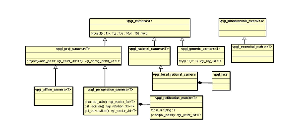 Figure 1:
The UML description of the major classes in
vpgl.
|
vpgl is dependent on two other core libraries, vgl and vnl.
| [ < ] | [ > ] | [ << ] | [ Up ] | [ >> ] | [Top] | [Contents] | [Index] | [ ? ] |
vpgl_proj_camera The projective camera is based on the computations inherent in
projective geometry. As described in the chapter on vgl, in
order to uniformly represent points at infinity as well as finite
points it is necessary to use homogenous coordinates where an extra
scale factor is appended to the Euclidian coordinates. Thus a point in
3-d is represented by the vector
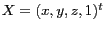 . The
projection is then defined by,
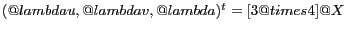 ,
where 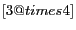 is the 3x4 projection matrix and
is called the projective scale factor. The vgl
library reprsesents both 2-d and 3-d points in homogeneous
coordinates, i.e., vgl_homg_pont_2d<T> and
vgl_homg_point_3d<T> respectively. vpgl_proj_camera<T>
also supports an interface to vnl, where homogenous coordinates
are represented by vnl vectors. The projection matrix of the
vpgl_proj_camera is represented internally as a
vnl_matrix_fixed<T, 3, 4>.
The projective camera also supports backprojection which casts a ray through a point in the image. A first point on the ray is defined as the center of projection, , which is the nullvector of the projection matrix. That is,
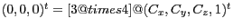 .
The second point on the ray, X, is any solution to the equation,
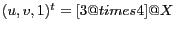 ,
where 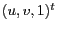 is the image point being backprojected. The
solution of this equation uses the vnl_svd solve method,
and so the SVD is cached as a member of vpgl_proj_camera for
efficiency.
The following example illustrates the use of vpgl_proj_camera basic projection methods.
vnl_matrix_fixed<double,3,4> M( 0.0 ); M[0][0] = M[1][1] = M[2][2] = M[2][3] = 1; vpgl_proj_camera<double> pcam(M); vgl_homg_point_3d<double> X(1, 2, 9, 1); vgl_homg_point_2d<double> x; x = pcam.project(X); // x = pcam(X) also works |
The result is
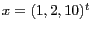 , or
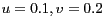 . Note that the () operator is assigned to represent a shorthand form for project.
An example of backprojection is as follows.
vgl_homg_point_2d<double> p(0.0, 0.0); vgl_homg_line_3d_2_points<double> l3d = pcam.backproject(p); vgl_ray_3d<double> r3d = pcam.backproject_ray(p); |
The line l3d is represented by two points, the finite point,
l3d.point_finite(), which corresponds to the center of
projection of the camera. The second point,
l3d.point_infinite(), is an ideal point (point at infinity) and
corresponds to the tangent vector along the line. An alternative
representation of the result of backprojection is
vgl_ray_3d<T>, which is described by a 3-d origin,
vgl_point_3d<T>, and a ray direction, vgl_vector_3d<T>.
| [ < ] | [ > ] | [ << ] | [ Up ] | [ >> ] | [Top] | [Contents] | [Index] | [ ? ] |
vpgl_perspective_camera
|
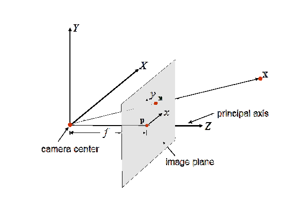 Figure 2:
The geometry of the perspective camera.
|
The key interior parameters are the principal point, , where the ray from the center of projection, perpendicular to the image plane, pierces the image plane, and the focal length, , which is the distance from the center of projection to the image plane along the principal ray.
The perspective camera projection maps a 3-d homogenous point, , into a homogenous image point, 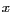 . The projection operation is factored into two matrix components as, 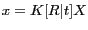 , where 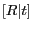 is a partitioned 3x4 matrix. The 3x3 matrix, 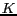 is called the calibration matrix and represents the internal camera parameters. That is,
_ _
| fx s px |
K = | 0 fy py |
| 0 0 1 |
- -
|
The elements, fx and fy are the focal length represented
in units of the physical pixel size in the x and y coordinate
system of the imaging device. A typical pixel dimenision is, dx
= dy = 5.0 microns. Thus for a 50mm focal length, fx = fy =
10000.0. The element s represents the skew that results if the image plane is tilted with respect to the lens axis. The principal point image coordinates are px and py.
The use of vpgl classes in constructing and accessing a perspective camera is illustrated by the following example.
// The default constructor is the identity matrix vpgl_calibration_matrix<double> K; K.set_focal_length(50.0e-3); K.set_x_scale(5.0e-6); K.set_y_scale(5.0e-6); vgl_point_2d<double> pp(640.0, 384.0); //for a 1280x768 image K.set_principal_point(pp); vgl_rotation_3d<double> R;// the identiy rotation vgl_vector_3d<double> t(0, 0, 10.0); //Translate along z. vpgl_perspective_camera<double> per_cam(K, R, t); vgl_homg_point_3d<double> X(1.0, 2.0, 9.0, 1.0). vgl_homg_point_2d<double> x = per_cam(X); // the principal ray direction vgl_vector_3d<double> pray_dir = per_cam.principal_axis(); // point the camera so that the principal ray // pierces the specified point vgl_homg_point_3d<double> origin(0, 0, 0); per_cam.look_at(origin); |
| [ < ] | [ > ] | [ << ] | [ Up ] | [ >> ] | [Top] | [Contents] | [Index] | [ ? ] |
vpgl_affine_camera The affine camera is a type of projective camera where the center of projection is at infinity (an ideal point). In this case, all the camera rays are parallel, i.e. they intersect at infinity. The main addition to this class is a viewing distance to provide a finite location for the origin of the camera rays. A finite ray origin is useful for ray tracing algorithms. The affine camera matrix can be specified by the first tworows of the 3x4 projection matrix, since the bottom row is 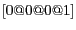 . An example illustrating the affine camera interface follows.
vnl_vector_fixed<double, 4> r0(1.0, 0.0, 0.0, 0.0); vnl_vector_fixed<double, 4> r1(0.0, 1.0, 0.0, 0.0); vpgl_affine_camera<double> aff_cam(r0, r1); aff_cam.set_viewing_distance(1000.0);//1Km above the scene vgl_homg_plane_3d<double> pplane = aff_cam.principal_plane(); |
In this example, the principal_plane is perpendicular to the camera rays and is positioned so the perpedicular distance from the origin is the viewing_distance.
| [ < ] | [ > ] | [ << ] | [ Up ] | [ >> ] | [Top] | [Contents] | [Index] | [ ? ] |
vpgl_rational_camera The rational camera does not reprsent physical parameters of projection as in the case of the perspective camera. Instead the camera computation is an approximation to some physical projection process, based on rational polynomials. This formulation arises since the actual physical model may have a large number of parameters and the projection computation may involve thousands of calculations. An example is a pushbroom image sensor, where a moving linear array is scanned over the scene by a rotating platform. The motion of the platform may be non-uniform with overshoot and oscillations. This complex scanning motion can be represented by a polynomial approximation with far fewer parameters than the kinetic motion parameters of the scanning platform. The standard rational camera is based on cubic polynomials in (x, y, z) with units in the wgs84 geographic coordinate system of longitude (x), latitude (y) and elevation (z).
A cubic polynomial in three variables requires 20 monomial terms, such as 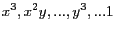 . There are four such polynomials used to compute the row and column coordinates of the projected 3-d geographic position. That is,
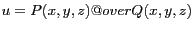 and 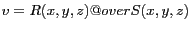 ,
where 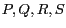 are cubic polynomials. The polynomial coefficients are computed from the recorded motion states of the sensor platform during the image scan. This representation is also called a Rational Polynomial Coefficient (RPC) model. It is common for commercial satellite images to have associated metadata that includes the 90 parameters for the RPC model.
The standard units of x and y are degrees and the unit of z is the meter. These units are significantly different in scale for the same Euclidan distance. For example on the surface of the Earth, one degree is about 100Km. To avoid large inaccuracies in the projection due to numerical precision it is necessary to offset and scale both the 3-d and 2-d coordinates onto the range 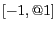 . This normalization is defined by ten additional camera parameters, which represent scale and offset coefficients, two for each of the five world and image coordinates. An example of constructing and applying a the rational camera is provided by the following example.
//Rational polynomial coefficients
//Rational polynomial coefficients
vcl_vector<double> neu_u(20,0.0), den_u(20,0.0),
neu_v(20,0.0),den_v(20,0.0);
neu_u[0]=0.1; neu_u[10]=0.071; neu_u[7]=0.01; neu_u[9]=0.3;
neu_u[15]=1.0; neu_u[18]=1.0, neu_u[19]=0.75;
den_u[0]=0.1; den_u[10]=0.05; den_u[17]=0.01; den_u[9]=1.0;
den_u[15]=1.0; den_u[18]=1.0; den_u[19]=1.0;
neu_v[0]=0.02; neu_v[10]=0.014; neu_v[7]=0.1; neu_v[9]=0.4;
neu_v[15]=0.5; neu_v[18]=0.01; neu_v[19]=0.33;
den_v[0]=0.1; den_v[10]=0.05; den_v[17]=0.03; den_v[9]=1.0;
den_v[15]=1.0; den_v[18]=0.3; den_v[19]=1.0;
//Scale and offsets
double sx = 50.0, ox = 150.0;
double sy = 125.0, oy = 100.0;
double sz = 5.0, oz = 10.0;
double su = 1000.0, ou = 500;
double sv = 500.0, ov = 200;
//construct the camera
vpgl_rational_camera<double> rcam(neu_u, den_u, neu_v, den_v,
sx, ox, sy, oy, sz, oz,
su, ou, sv, ov);
vgl_point_3d<double> X(150.0, 100.0, 10.0);
vgl_point_2d<double> x;
x = project(X); // xu = 1250.0, xv = 365.0
|
It is noted that the vpgl_rational_camera class does not have a back_project method. Solving a system of third order polynomials is not feasible in closed form and involves elaborate non-linear optimization routines. Thus the backprojection operations are relegated to the /algo sub-library.
| [ < ] | [ > ] | [ << ] | [ Up ] | [ >> ] | [Top] | [Contents] | [Index] | [ ? ] |
vpgl_local rational_camera The geographic spherical coordinates defined for the standard rational camera are not convenient when processing geometry such as 3-d models of buildings. For example, determining if planar surfaces are orthogonal is an involved computation when the planes are described in spherical Earth coordinates. It is often simpler to convert the geographic coordinates to a local Euclidian frame. The Euclidia frame is based on a local tangent plane at a specified geographic origin as shown in Figure 3. If the scene of interest is relatively small, say less than 1Km, then the local tangent approximation is sufficiently accurate for most computer vision applications.
The vpgl_local_rational_camera is a sub-class of the vpgl_rational_camera, with an added member that defines a local vertical coordinate frame. The member is an instance of the class, vpgl_lvcs.
|
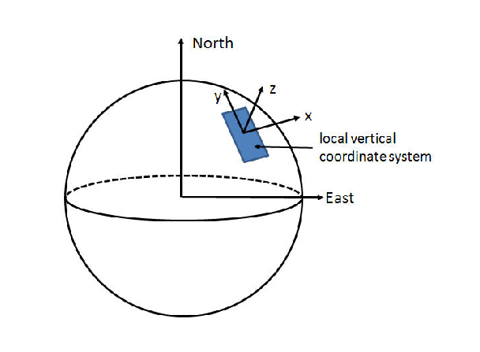
Figure 3:
A local vertical coordinate system defined on the surface of the Earth.
|
// read the rational camera from a file in rpb format
vpgl_rational_camera<double> rcam;
vcl_ifstream is("./rpc_camera.rpb");
is >> rcam ;
// get the center of the polynomial approximation volume
double xoff = rcam.offset(vpgl_rational_camera<double>::X_INDX);
double yoff = rcam.offset(vpgl_rational_camera<double>::Y_INDX);
double zoff = rcam.offset(vpgl_rational_camera<double>::Z_INDX);
// set the lvcs origin
vpgl_lvcs lvcs(yoff, xoff, zoff);
// construct the local rational camera
vpgl_local_rational_camera<double> lrcam(lvcs, rcam);
double ul, vl;
//ul and vl will be at the center of the image
lrcam.project(0.0, 0.0, 0.0, ul, vl);
|
There is a somewhat standard ascii format for rational polynomial coefficients called a "RPB" file. Alternatively, the National Imagery Transmission Format (NITF) header specifies a datablock for RPC coefficients. The class, vpgl_nitf_rational_camera class in the file_formats sub-directory is provided to extract the coefficients from NITF image files.
| [ < ] | [ > ] | [ << ] | [ Up ] | [ >> ] | [Top] | [Contents] | [Index] | [ ? ] |
vpgl_generic_camera The generic camera is represented by a grid of rays, one per pixel of the camera image. In vpgl the rays are stored in a pyramid of image resolutions to support efficient computation of the project method. That is, it is necessary to find a ray in the highest resolution grid that is closest to the specified 3-d point. This search is done hierarchically for speed. The backproject function is trival since each pixel has an associated ray. The main motiviation for this camera class is to support ray tracing in volumetric processing.
| [ < ] | [ > ] | [ << ] | [ Up ] | [ >> ] | [Top] | [Contents] | [Index] | [ ? ] |
vpgl_fundamental_matrix The geometric relationship between a pair of images is captured by the fundamental matrix, as shown in Figure 4. In the field of photogrammetry, this relationship is called relative orientation. Given a point, , in a left camera view, its backprojection forms a ray that intersects the 3-d point, , that projects to . However the location of along the ray cannot be determined from a single image. Thus the image point defines a 3-d ray that projects into a second image as a line. In the figure this image line is denoted by . The image point in the right camera corresponding to the projection of , 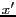 , must lie on as shown.
It is also the case that the line intersects a point, , called the epipole. Two epipoles are constructed as the intersection of the line joining the two camera centers with each image, i.e., 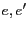 . Thus, the relationship between the two cameras is also refered to as epipolar geometry. The relationship between the point and the @line{l'} is defined by a 3x3 matrix, 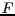 . That is,
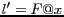 .
The matrix, , is called the fundamental matrix.
The fundamental matrix plays an important role in finding the correspondence of feature points between two images, for example in tracking objects in video sequences. If two image features one each in a pair of images correspond to the same 3-d point, it must be the case that the epipolar constraint is statisfied by the two points, where,
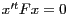
This constraint is used to verify that proposed feature correspondences are consistent with the epipolar geometry of the two views being matched.
|
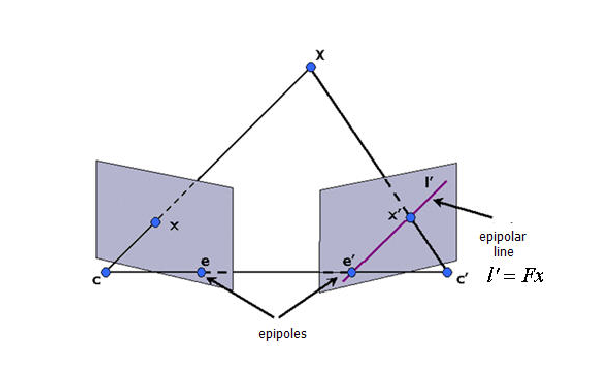 Figure 4:
The geometry of the fundamental matrix.
|
The fundamental matrix can be constructed from two cameras as illustrated in the following code fragment.
// Ml and Mr, some 3x4 matrices vpgl_proj_camera<double> Cl(Ml),Cr(Mr) // right and left cameras vpgl_fundamental_matrix<double> F1( C1r, C1l ); |
It is also the case that the fundamental matrix is sufficient to define two cameras, although not uniquely. The method for extracting the "left" camera, assuming the "right" camera is the identity matrix is,
vpgl_proj_camera<T> extract_left_camera(const vnl_vector_fixed<T,3>& v, T lambda ) const; |
The meaning of the arguments v and lamba are defined in Hartley and Zisserman, 2nd edition, p. 256.
An example of accessing one of the the epipolar lines is illustrated below.
vpgl_fundamental_matrix<double> F; vgl_homg_point<double> p(1.0, 2.0); //The right epipolar line vgl_homg_line_2d<double> l_r = F.r_epipolar_line( p ); |
| [ < ] | [ > ] | [ << ] | [ Up ] | [ >> ] | [Top] | [Contents] | [Index] | [ ? ] |
vpgl_algo A number of algorithms have been developed that make use of the camera data structures in vpgl. These algorithms are described in the following subsections.
| [ < ] | [ > ] | [ << ] | [ Up ] | [ >> ] | [Top] | [Contents] | [Index] | [ ? ] |
vpgl_fm_compute_*_point The library contains implementations of computing the fundamental matrix from differing numbers of correspondences between the left and right images. The most widely used algorithm is the so-called eight-point algorithm. An example of its application follows.
// corresponding points vcl_vector< vgl_homg_point_2d<double> > p1r, p1l; vpgl_fm_compute_8_point fmc; vpgl_fundamental_matrix<double> fm1est; fmc.compute( p1r, p1l, fm1est ); |
| [ < ] | [ > ] | [ << ] | [ Up ] | [ >> ] | [Top] | [Contents] | [Index] | [ ? ] |
vpgl_ortho_procrustes The orthogonal procrustes problem is defined by the relationship between two given 3-d pointsets, i.e.,
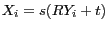 ,
where the goal is to determine the scale, , the 3-d rotation
, and the translation vector . The constructor for the
vpgl_ortho_procrustes takes in the two point sets and calling
any of the accessors for the unkown transformation parameters will
trigger solution processing. An example of using the algorithm follows.
// two sets of five 3-d points vnl_matrix<double> X(3, 5), Y(3, 5); vpgl_ortho_procrustes op(X, Y); vgl_rotation_3d<double> R = op.R(); double s = op.s(); vnl_vector_fixed<double, 3> t = op.s(); double error = op.residual_mean_sq_error(); |
| [ < ] | [ > ] | [ << ] | [ Up ] | [ >> ] | [Top] | [Contents] | [Index] | [ ? ] |
vpgl_camera_compute This algorithm computes camera parameters from known correspondences between a set of 3-d points and their projection into the camera image plane. An example is the static method,
bool vpgl_proj_camera_compute::
compute( const vcl_vector< vgl_homg_point_2d<double> >& image_pts,
const vcl_vector< vgl_homg_point_3d<double> >& world_pts,
vpgl_proj_camera<double>& camera );
|
There is also the class vpgl_perspective_camera_compute, which can find the , , parameters of the perspective camera, or just and , given .
| [ < ] | [ > ] | [ << ] | [ Up ] | [ >> ] | [Top] | [Contents] | [Index] | [ ? ] |
vpgl_camera_convert This algorithm class converts between various camera types. A typical example is to convert from a rational camera to a generic camera. Recall that a generic camera is represented by a grid of 3-d rays, one for each pixel in a specified image. It is effective to convert the rational camera to a generic camera to enable efficient ray tracing computations. An example of the conversion interface follows.
bool convert( vpgl_local_rational_camera<double> const& rat_cam,
int ni, int nj,
vpgl_generic_camera<double> & gen_cam, unsigned level = 0);
|
The level argument refers to the representation of the camera rays, which are stored in a pyramid structure to enable fast computation for projecting a 3-d point into the camera image. level=0 corresponds to the base image resolution of the pyramid.
| [ < ] | [ > ] | [ << ] | [ Up ] | [ >> ] | [Top] | [Contents] | [Index] | [ ? ] |
vpgl_rational_adjust_onept In many cases the rational polynomial projection exhibits very high relative accuracy, but there can be a small pointing error that can be corrected by translating the image plane. It is often the case that an image analyst will select a single corespondence in multiple images and then the cameras are adjusted so that the corresponding 3-d point projects correctly in each image. The translations are computed so that each camera translation is as small as possible, while maintaining a consistent projection from 3-d to 2d. The geometry of the adjustment process is shown in Figure 5.
|
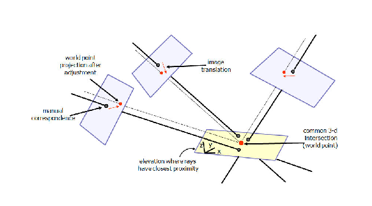
Figure 5:
The adjustment of rational camera 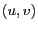 translation offsets.
|
//single image correspondence to correct cameras vgl_point_2d<double> p1(25479.9, 409.113), p2(17528.2, 14638); vcl_vector<vgl_point_2d<double> > corrs; corrs.push_back(p1); corrs.push_back(p2); vcl_vector<vpgl_rational_camera<double> > cams(2); cams[0]= rcam1; cams[1]= rcam2; vcl_vector<vgl_vector_2d<double> > cam_trans; vgl_point_3d<double> intersection; bool good = vpgl_rational_adjust_onept::adjust(cams, corrs, cam_trans, |
| [ < ] | [ > ] | [ << ] | [ Up ] | [ >> ] | [Top] | [Contents] | [Index] | [ ? ] |
vpgl_rational_adjust This algorithm carries out a similar function to vpgl_rational_adjust_onept but instead adjusts the translation of a single rational camera from a set of correspondences between 3-d points and 2-d image points. The signature is,
bool adjust(vpgl_rational_camera<double> const& initial_rcam,
vcl_vector<vgl_point_2d<double> > img_pts,
vcl_vector<vgl_point_3d<double> > geo_pts,
vpgl_rational_camera<double> & adj_rcam)
|
| [ < ] | [ > ] | [ << ] | [ Up ] | [ >> ] | [Top] | [Contents] | [Index] | [ ? ] |
vpgl_backproject It is useful for many applications to determine a 3-d point as the backprojection of an image point. The 3-d point is not defined unless a 3-d surface is also specified. This algorithm class applies non-linear optimization to find the closest 3-d point on a 3-d surface to a backprojected camera ray.
A polymorphic form of the backproject method is as follows.
bool bproj_plane(const vpgl_camera<double>* cam,
vnl_double_2 const& image_point,
vnl_double_4 const& plane,
vnl_double_3 const& initial_guess,
vnl_double_3& world_point);
|
Note that since a non-linear solution is required in general (e.g. a rational camera) it is necessary to provide a guess as the starting point for the solution. In most cases the initial guess can just be the origin. Another method on vpgl_backproject with a specific rational camera interface is shown below.
...
vpgl_rational_camera<double> rcam(neu_u, den_u, neu_v, den_v,
sx, ox, sy, oy, sz, oz,
su, ou, sv, ov)
vnl_double_4 plane;
vnl_double_2 image_point;
image_point[0]=1250.0; image_point[1]=332;
initial_guess[0]=200.0; initial_guess[1]=150.0; initial_guess[2]=15.0;
plane[0]=0; plane[1]=0; plane[2]=1.0; plane[3]=-10.0;
bool success =
vpgl_backproject::bproj_plane(rcam, image_point, plane,
initial_guess, world_point);
|
| [ < ] | [ > ] | [ << ] | [ Up ] | [ >> ] | [Top] | [Contents] | [Index] | [ ? ] |
vpgl_ray This class contains various static methods for computing camera rays. For example, a non-linear computation is needed to determine a ray from a rational camera at a given 3-d point in space. The method signature is,
bool ray(vpgl_rational_camera<double> const& rcam,
vnl_double_3 const& point_3d,
vnl_double_3& ray)
|
Another example based a vgl interface and with an abstract camera is,
bool ray(const vpgl_camera<double>* cam,
vgl_point_3d<double> const& point_3d,
vgl_vector_3d<double>& ray)
|
This method polymorphically computes the ray, depending on the camera subclass.
| [ < ] | [ > ] | [ << ] | [ Up ] | [ >> ] | [Top] | [Contents] | [Index] | [ ? ] |
vpgl_ray_intersect This algorithm class computes the 3-d point that lies closest to a set of camera rays. The algorithm assumes a non-linear solution to include the rational camera. An example intersection computation is illustrated in the following example.
vcl_vector<vpgl_camera<double>* > cams(2);
cams[0]= (vpgl_camera<double>*)(&rcam1);
cams[1]= (vpgl_camera<double>*)(&rcam2);
vcl_vector<vgl_point_2d<double> > image_pts;
image_pts.push_back(p1); image_pts.push_back(p2);
vpgl_ray_intersect ri(2);
vgl_point_3d<double> intersection;
vgl_point_3d<double> initial_point(44.3542,33.1855 ,32);
bool good =
ri.intersect(cams, image_pts, initial_point, intersection);
|
Note that a class instance is required, rather than a static method.
| [ << ] | [ >> ] | [Top] | [Contents] | [Index] | [ ? ] |
This document was generated on May, 1 2013 using texi2html 1.76.